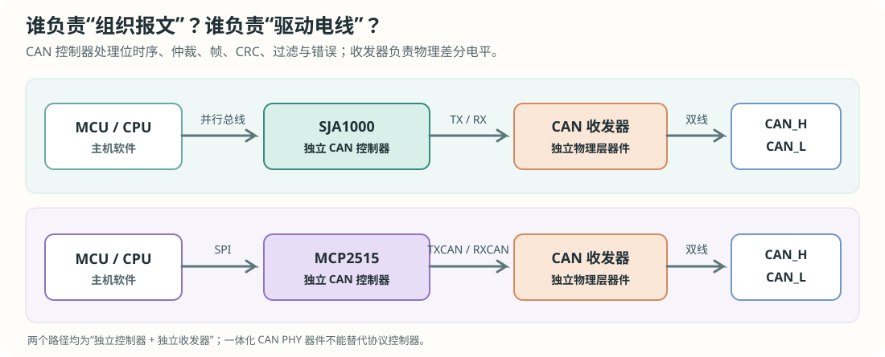
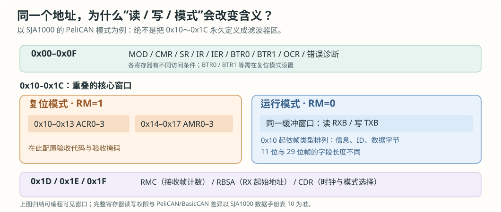
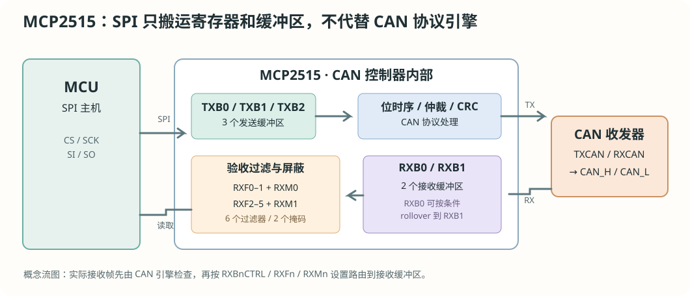

寄存器写成功了，为什么总线还没有报文？
沿着一帧消息走过 CPU 接口、发送缓冲、位时序逻辑、验收过滤和物理层，理解 SJA1000 与 MCP2515 各自承担的工作。
你把发送 ID 和数据写进控制器，SPI 示波器也看到了正确的字节，但 CAN 分析仪仍没有任何报文。问题可能不在发送数据，而在请求发送没有触发、控制器没有切换到正常模式、TXD/RXD 没连到收发器，或者总线上根本没有另一台能应答的节点。
上一章解释了“什么时候采样”，本章解释“是谁把数据变成帧，谁把位电平送到线缆上”。示例围绕经典 CAN 的两颗独立控制器：NXP SJA1000 数据手册与 Microchip MCP2515 数据手册（DS20001801K）。
收发器不是控制器：它们工作在不同的边界
控制器处理 CAN 报文帧、仲裁、位填充、CRC、确认、错误检测、位时序和接收过滤；收发器把控制器输出的逻辑电平转换成 CAN_H 与 CAN_L 的电气信号。SJA1000 和 MCP2515 都属于独立控制器，常见系统必须再接收发器。TJA1043 与 SN65HVD230 是收发器，不是完整的 CAN 协议控制器。NXP AN97076 §2.2–3

适合有相应外部总线时序的主机设计；控制器通过地址/数据总线与读写选通访问。PeliCAN 可处理标准与扩展帧，并提供错误诊断能力。
适合通过 SPI 给 MCU 增加经典 CAN 控制器。但 SPI 带宽、事务次数和中断服务时延仍影响系统接收能力；“多个 SPI 控制器”不意味着无限制扩展。
SJA1000：不是 32 个地址各自固定一类功能
BasicCAN / PeliCAN 是 SJA1000 的控制器兼容性/功能模式，而不是“正常 / 监听”这种运行模式。CDR.7 选择 PeliCAN；在 PeliCAN 中，MOD.0 用于复位态，MOD.1 用于监听态，MOD.2 是自测试。具体访问控制见 SJA1000 §6.4.1–6.4.3、表 10/12。

| 关键地址（PeliCAN） | 寄存器 | 需要记住的行为 |
|---|---|---|
0x00 | MOD | RM、LOM、STM、AFM、SM 是独立标志位，不能用一个通用枚举替换 |
0x01 / 0x02 | CMR / SR | 向 CMR 请求发送/释放 RXB；从 SR 观察状态 |
0x03 / 0x04 | IR / IER | 中断来源与使能；只“打开中断”不会自动发送帧 |
0x06 / 0x07 | BTR0 / BTR1 | 复位态下配置位时序；运行态只读 |
0x10–0x17 | ACR/AMR 或 TXB/RXB | 由复位态、读写方向及帧类型决定 |
0x1D / 0x1E / 0x1F | RMC / RBSA / CDR | 接收计数、接收起点和时钟/模式；不是末尾三个“报文数据寄存器” |
一个容易算错的 BTR0 / BTR1 示例
原来常见的误解是把 SJA1000 的 BRP 当成 STM32 bxCAN 的直接分频值。SJA1000 的 BTR0[5:0] 存的是 BRP−1，且每个 TQ 由外部振荡器经过一个额外的 2 倍因素得到。以振荡器 16 MHz、BRP 实际值 1、TSEG1=13、TSEG2=2、SJW=1、单采样为例：
bitrate = fXTAL / [2 × BRP × (1 + TSEG1 + TSEG2)] = 500 kbit/s
sample = (1 + 13) / 16 = 87.5%
BTR0 = 0x00，BTR1 = 0x1C（SAM=0）
其中 BTR1=0x1C 是 (TSEG2−1)<<4 | (TSEG1−1)。此前把 BTR0=0x03 说成与这组数相同，会在 16 MHz 时得到错误速率。参见 SJA1000 §6.5.1–6.5.2。
滤波器的一个反直觉约定
SJA1000 的验收掩码 AMR 中 1 表示不比较（don't care），0 表示比较。所以“全部比较”是掩码位全 0，而不是全 1。PeliCAN 的 AFM=1 使用单个 32 位过滤视图、AFM=0 使用两个 16 位视图；字段组合与标准/扩展帧有关。数据手册 §6.4.15
MCP2515：SPI 发了一个字节，并不等于总线上发了一帧
MCP2515 通过 SPI 访问寄存器与消息缓冲，内部具有 3 个发送缓冲区（TXB0–2）、2 个接收缓冲区（RXB0–1）、6 个验收过滤器（RXF0–5）与 2 个掩码（RXM0–1）。其中 RXF0–1 / RXM0 对应 RXB0，RXF2–5 / RXM1 对应 RXB1。RXB0 的 rollover 至 RXB1 需满足专门的配置和缓冲条件，不是始终发生。数据手册 §3–4

不是“五条 SPI 指令”：按指令字节识别事务
| 指令 | 首字节 | 它真正做什么 |
|---|---|---|
| RESET | 0xC0 | 将芯片复位到默认寄存器值和配置模式；不是 0x05 |
| READ / WRITE | 0x03 / 0x02 | 读写寄存器，还需要地址与数据阶段 |
| BIT MODIFY | 0x05 | 按掩码修改支持此操作的寄存器位 |
| LOAD TX BUFFER | 0x40 家族 | 向选定 TXB 的指定起始位置装载帧字段 |
| RTS | 0x80 家族 | 请求指定 TXB 开始发送；不是读接收缓冲 |
| READ RX BUFFER | 0x90 家族 | 直接读指定 RXB 的消息字段 |
| READ STATUS / RX STATUS | 0xA0 / 0xB0 | 快速查询发送、接收状态 |
指令集合来自 Microchip 表 12-1（第 67 页）。SPI 的 CS 必须在每条事务期间维持低电平；新的命令需要重新结束并开始事务。推荐先使用受支持的 SPI mode 0,0 或 1,1 核对波形。
模式切换要请求，也要确认
CANCTRL 地址 0x0F 的 REQOP[7:5] 表示请求模式；CANSTAT 地址 0x0E 的 OPMOD[7:5] 才表示实际当前模式。例如请求配置模式时可发送 05 0F E0 80 这四个 SPI 字节，然后读回 CANSTAT 检查是否真的变成 100。不能把“CANCTRL 写了 0x00”当成状态确认。MCP2515 §10、表 10-1/10-2
// MCP2515 SPI 事务片段；每一行是一笔独立的 CS 低电平事务
uint8_t reset[] = {0xC0}; // RESET -> Configuration
uint8_t reqcfg[] = {0x05, 0x0F, 0xE0, 0x80}; // BIT MODIFY CANCTRL.REQOP = 100
uint8_t reqnorm[]= {0x05, 0x0F, 0xE0, 0x00}; // REQOP = 000
uint8_t rdmode[] = {0x03, 0x0E, 0x00}; // READ CANSTAT，最后字节读回值
// 伪代码：spi_transfer() 需自行适配 MCU SPI HAL 和 CS 控制
// spi_transfer(reset); ... 写 CNF3/2/1 + 过滤器 ...
// spi_transfer(reqnorm);
// 轮询 CANSTAT 的 (value & 0xE0) == 0x00，并设置超时
// 然后装入 TXBn 和发 RTS，检查 TXnIF / 错误状态。SIDH = ID >> 3、SIDL = (ID & 7) << 5；因此 ID=0x123 对应 SIDH=0x24、SIDL=0x60（标准格式，EXIDE=0）。必须同时考虑具体过滤器或 TX 缓冲的帧类型位。MCP2515 §3–4 SIDH/SIDL同样一串掩码，在两颗芯片上为什么含义相反？
对一个纯 11 位标准 ID 的抽象比较，MCP2515 是 mask=1 → 必须比较；SJA1000 AMR 是 mask=0 → 必须比较。这不是语法风格区别，而是硬件验收规则不同。下面让滤波目标始终是 0x123，试着传入 0x12A。
SJA1000：匹配 ⇔ ((RX_ID XOR FILTER_ID) AND (~AMR & 0x7FF)) = 0
11 位标识符掩码实验
匹配：0x123 与目标 0x123 一致；MCP2515 掩码 0x7FF 表示全部比较。
本实验只对 11 位 ID 做位运算，不模拟 SJA1000 单/双过滤布局，也不模拟 MCP2515 的 EXIDE、扩展帧、标准帧数据字节过滤、RXM/RXB 接收模式或 rollover。它不是完整的芯片寄存器仿真。
| 芯片 | 全比较掩码（11 位抽象） | 忽略低 4 位 | 用于 0x123 的 ID 高位字节 |
|---|---|---|---|
| MCP2515 | 0x7FF | 0x7F0 | SIDH=0x24, SIDL=0x60 |
| SJA1000 | 0x000 | 0x00F | 依 PeliCAN 单/双过滤模式与帧格式映射 |
注意 MCP2515 的实际标准帧验收可涉及数据字节过滤；而 SJA1000 的 ACR/AMR 也依单/双过滤模式及帧字段排列。上述“11 位抽象掩码”帮助理解极性，不能直接当成一组完整的硬件寄存器写入方案。参见 MCP2515 表 4-2 与 SJA1000 §6.4.15。
两颗控制器的工作状态不要混成一个枚举
MCP2515 的 REQOP[2:0] 有五种请求值；SJA1000 PeliCAN 则用 MOD 的多个标志位组合工作状态。比如 SJA1000 的自测试 不是 MCP2515 的内部 Loopback 的同义替代：SJA1000 测试使用自接收请求，细节和物理输出行为应单独按手册确认。
| 用途 | MCP2515 的 REQOP[2:0] | SJA1000 PeliCAN |
|---|---|---|
| 正常收发 | 000（CANCTRL 对应高位 0x00） | MOD.RM=0，并清除 LOM/STM 等不期望标志 |
| 配置 / 复位 | 100（0x80） | MOD.RM=1（0x01） |
| 监听 | 011（0x60） | MOD.LOM=1（0x02） |
| 内部回环 / 自测试 | 010（0x40）内部回环 | MOD.STM=1 配合自接收请求；语义不同 |
| 睡眠 | 001（0x20） | MOD.SM=1，需满足入睡条件 |
监听模式的物理行为很重要。MCP2515 Listen-Only 不发 ACK 或错误帧；MCP2515 Loopback 在内部传递 TX→RX，不会证明外部收发器或 CAN_H/CAN_L 正常。睡眠后唤醒也不意味着可以立即发送：需等待振荡器稳定及确认恢复后的模式。MCP2515 §10.2–10.5
可靠初始化不是“复位 → 写寄存器 → 发送”，而是每步都读回
确认振荡器实物频率、引脚时序、SPI 模式或并行总线，以及收发器 TX/RX 的连通性。
MCP2515 可用 SPI RESET 0xC0；SJA1000 进入复位模式，选择 PeliCAN 并验证 RM。
写位时序、过滤器、中断和外设接口；确认模式转换，必要时读回寄存器，带超时判断。
SJA1000 的示意初始化顺序
// 硬件相关伪代码：bus_write/bus_read 是 CPU 并行总线驱动
bus_write(0x00, 0x01); // 请求复位模式（BasicCAN CR.0 / PeliCAN MOD.0）
/* 确认设备进入复位状态；实际硬件启动流程依复位时序 */
bus_write(0x1F, 0x88); // CDR：进入 PeliCAN；禁用 CLKOUT（示例）
bus_write(0x00, 0x01); // PeliCAN MOD.RM=1
bus_write(0x06, 0x00); // BTR0：16MHz，BRP=1，SJW=1
bus_write(0x07, 0x1C); // BTR1：TSEG1=13，TSEG2=2，SAM=0
/* 0x08 OCR 输出驱动、ACR/AMR 过滤器按具体收发器/业务配置 */
/* 0x04 IER 中断选项要与 ISR 行为一致 */
bus_write(0x00, 0x00); // 清 RM/LOM/STM/SM 等，回到工作状态
/* 用 SR 和错误诊断寄存器验证状态；发送前先写TXB再请求发送 */MCP2515 的示意初始化顺序
- 检查电源、晶振、SPI 模式、CS 电平与 RESET 接线；发送独立的
0xC0事务，读回CANSTAT.OPMOD=100。 - 根据真实振荡器和目标速率计算
CNF1 / CNF2 / CNF3，然后写入；不能把上一章 bxCAN 的分频寄存器值直接搬到 MCP2515。 - 配置
RXFn / RXMn、RXBnCTRL、CANINTE，留意 EXIDE、过滤器归属与溢出标志。 - 用
BIT MODIFY 05 0F E0 00请求正常模式，并轮询 CANSTAT 的OPMOD=000，设置合理超时。 - 装载 TXBn、发相应的 RTS；检查
TXREQ、TXnIF、TEC/REC，并使用至少一台正常工作的对端节点确认 ACK 与接收。
仓库提供 可运行的寄存器编码脚本：计算 SJA1000 的 BTR0/BTR1、MCP2515 的 11 位 ID 拆分，并生成模式请求的 SPI 字节。运行 python -m examples.can_chapter06_checks 查看；这不是可直接在某块开发板上调用的硬件驱动。
从“SPI 有波形”走到“整网报文可靠”
- 寄存器可访问？MCP2515 读回 CANSTAT / CANCTRL；SJA1000 检查并行总线读写和复位态。错误的 CS 时序或主机总线选通会导致看似写成功却无效。
- 运行模式正确？配置/监听/环回/休眠状态可能不发总线报文；请求状态与实际状态需要分开检查。
- 发送缓冲就绪？帧格式、DLC、ID 编码、TXREQ/RTS/CMR 是否正确？单步定位消息有没有进入仲裁。
- 物理输出完整？控制器 TX 输出、收发器供电/使能、CAN_H/CAN_L、两端终端电阻与共地/共模要求是否满足？
- 有 ACK 节点？单台正常模式节点独自发报文无法从总线获得其他接收节点的 ACK；内部回环通过不代表外部总线畅通。
- 接收路径饱和？检查 RXBn 溢出、接收 FIFO 是否释放、过滤器归属和主机读取延迟。过滤器不是无限缓存能力。
总结：从 CPU 到 CAN_H/CAN_L 有两条技术边界，寄存器映射与 SPI 指令又是两套不同的接口模型。先把模型分清，再追踪一个发送请求的状态变化，才能让驱动调试变成一条可重复的诊断路径。
资料与适用边界
- NXP / Philips · SJA1000 Stand-alone CAN Controller：§6.4 PeliCAN、表 10/12、§6.5 BTR0/BTR1、CDR。
- NXP AN97076 · SJA1000 Stand-alone CAN Controller：CPU 接口、初始化、滤波与收发流程。
- Microchip · MCP2515 Family Data Sheet DS20001801K：§3–4 TX/RX/过滤器、§9 复位、§10 模式、§12 SPI 指令表。
范围：经典 CAN；指定器件的寄存器与抽象的 11 位 ID 实验。CAN FD、具体 PCB 布局/EMC、Linux 驱动、硬件时序实测及芯片勘误需另行验证。